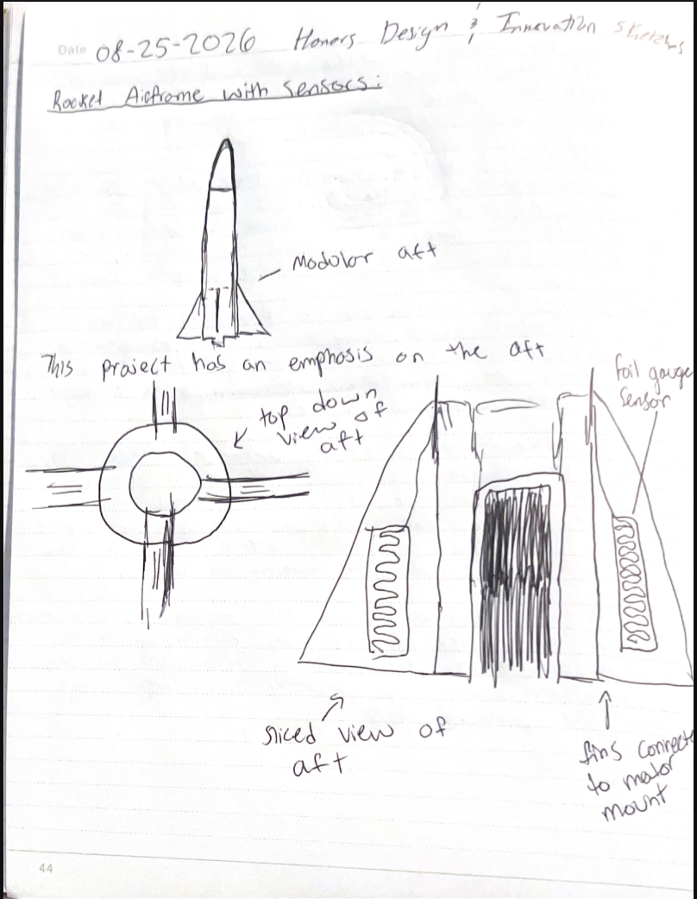
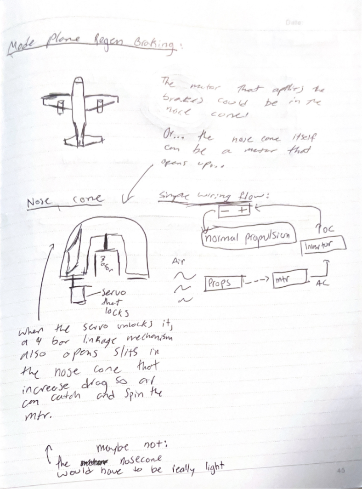
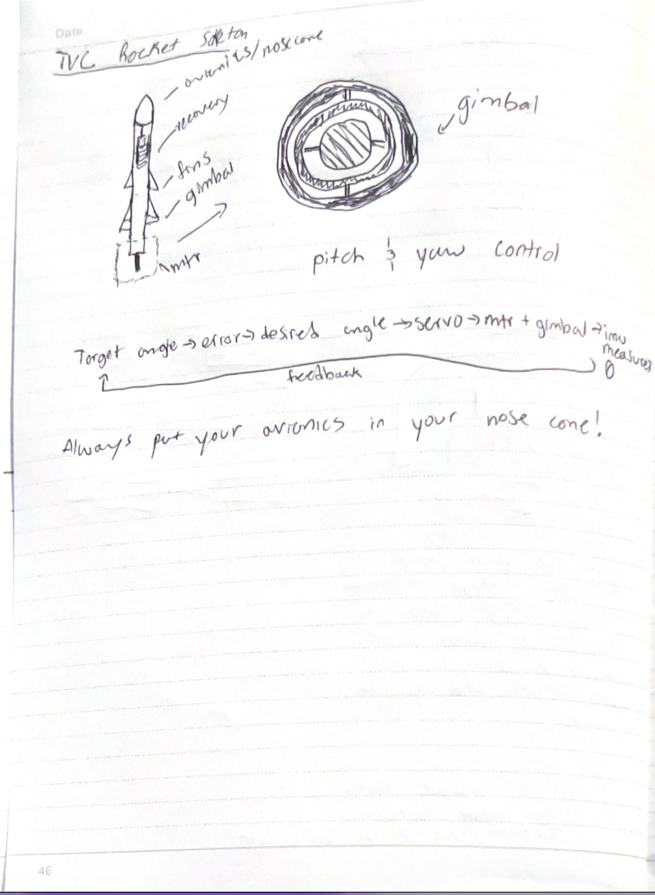

Final Project: L1 Rocket with Custom Avionics
A high-power rocket built for Level 1 certification, carrying avionics I designed. Follow the build one step at a time.
Build log
Planning: Project Overview To do
Goals, requirements, and schedule for the L1 rocket.
Initial Design To do
Sketches and early decisions about the rocket's shape and layout.
CAD To do
The 3D model of every part.
OpenRocket & Simulation To do
Simulating stability and altitude before building.
Bill of Materials (BOM) To do
Every part, where it came from, and what it cost.
3D Printing the Nosecone To do
Printing the nosecone.
The Fins To do
Fixing the Wazer, cutting the fins, and sanding them.
Cutting the Body Tube To do
Measuring and cutting the airframe tube.
Motor Mount Tube & Attaching the Fins To do
Building the motor mount and connecting it to the fins.
Ideas I considered before choosing
1. Sensor rocket airframe
Embed sensors into the airframe of the rocket. Use sensors such as foil strain gauges to determine the forces being exerted on the structures of the rocket and be able to experimentally compare different materials for the use case of rocketry. This project could also evolve into making a "digital twin" of the rocket during flight, which essentially uses all of the data collected by the various sensors (IMU, accelerometer, foil gauge sensors) to display the stage of flight and the status of all of the parts of the rocket visually to make launch days go by smoother. I like this project because it combines avionics and structures. The limitations in choosing this project are limited launch dates and inconsistent testing opportunities.

2. Regenerative air braking for electric planes
Use the motors of the plane and spin them backwards to get some of the electricity lost in braking back for more efficient flight. The inspiration for this project came from my car, which uses regenerative braking in the hybrid system. Adapting the same concept has more limitations during flight than on the ground, but I think this project has a much more clear "real world" application. Using electromagnetic induction to potentially make aircraft more efficient is really cool because it combines the avionics and plane build components with a technology that is relatively new in aviation. IEEE paper

3. Thrust vector controlled model rocket
The final project that I would like to consider is a thrust vector controlled model rocket. This project would implement a gimbaled motor mount and use a control feedback loop to correct any deviations in flight by translating the command to move in a direction into servo output. This project is the most technically demanding on paper because it uses things like avionics, control systems, and building the rocket itself. BPS Space has a cool video on how he did one, which I would draw inspiration from, but it is also worth noting that this project has been done before and isn't novel.
